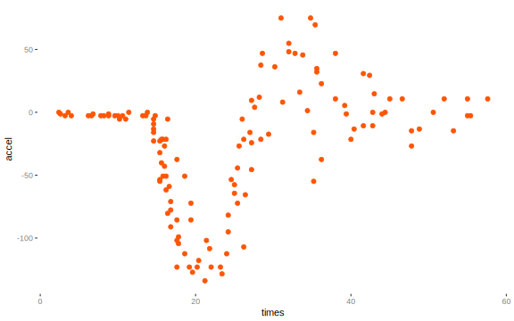
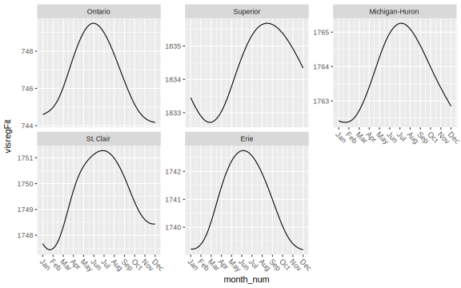
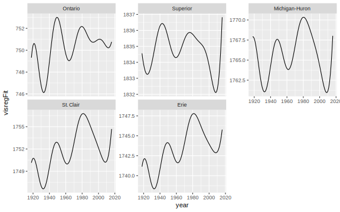

Exercises
Exercise 1
Let’s start off with a single covariate. We’ll use the motorcycle data set, which is a data frame giving a series of measurements of head acceleration in a simulated motorcycle accident, used to test crash helmets.
- times: in milliseconds after impact
- accel: acceleration in g
data('mcycle', package='MASS')
Run a gam predicting head acceleration by time with time as a smooth term.
You can plot the result with visreg as follows. If you haven’t installed it, you’ll need to do so. Otherwise just use the plot function.
library(visreg)
visreg(my_gam_model, partial=F)Exercise 2
Next we’ll use a the yearly movie data consisting of the following variables.
- year: Year of release.
- budget_2016: Average budget in millions 2016 US dollars
- length: Average length in minutes.
- rating: Average IMDB user rating.
- votes: Average number of IMDB users who rated movies that year, in thousands.
- N: The number of movies that went into the averaging.
2a
Run an lm/glm with budget_2016 as the target and your choice of covariates. Here is some starter code.
load('data/movies_yearly.RData')
mod_glm = glm(budget_2016 ~ x + z, data=movies_yearly)2b
Run an gam with the same model but no smooth terms (i.e. just change the function to gam)
2c
Now run a gam with any smooth terms you care to. What is your interpretation of the results?
Exercise 3
Use the movies_yearly_action data. This data is the same as the yearly data, but broken out into whether the movie was categorized as being and Action flick (possibly in combination of another genre) or Other. Run a GAM where the outcome is budget in millions of 2016 dollars.
# If you haven't already, load the data as in exercise 2
gam_model_byAction = gam(budget_2016 ~ s(year, by=Action) + Action + votes + length, Plot the result with visreg as follows.
visreg::visreg(gam_model_byAction, xvar='year', by='Action',
overlay=T, partial=F)What trends do you see? Is the yearly trend the same for action movies vs other movies? Do you think both trends should be allowed to ‘wiggle’?
Exercise 4
Keep it local with the following Great Lakes data set13. The following model uses a Gaussian process smooth for year and a p-spline for the monthly effect, both by the corresponding lake. Try increasing k for the year effect, and with bs='cp' (a cyclic p-spline) for the month effect. Do you think using the cyclic option, where the endpoints are equal, was viable approach?
load('data/greatLakes.RData')
gam_monthly_cycle = gam(meters*10 ~ lake + s(year, by=lake, bs='gp', k=10)
+ s(month_num, bs='ps', by=lake), data=lakes)
# summary(gam_monthly_cycle)
monthpd = visreg(gam_monthly_cycle, xvar='month_num', by='lake', overlay=T, plot=F)$fit
yearpd = visreg(gam_monthly_cycle, xvar='year', by='lake', overlay=T, plot=F)$fit
monthpd %>%
ggplot() +
geom_line(aes(x=month_num, y=visregFit)) +
scale_x_continuous(breaks=1:12, labels=month.abb) +
facet_wrap(~lake, scales='free_y') +
theme(axis.text.x = element_text(angle=-45, hjust = 0))
yearpd %>%
ggplot() +
geom_line(aes(x=year, y=visregFit)) +
facet_wrap(~lake, scales='free_y')
Lake data from http://www.lre.usace.army.mil/Missions/Great-Lakes-Information/Great-Lakes-Water-Levels/Historical-Data/. Note that in the exercise we model the water level in decimeters.↩